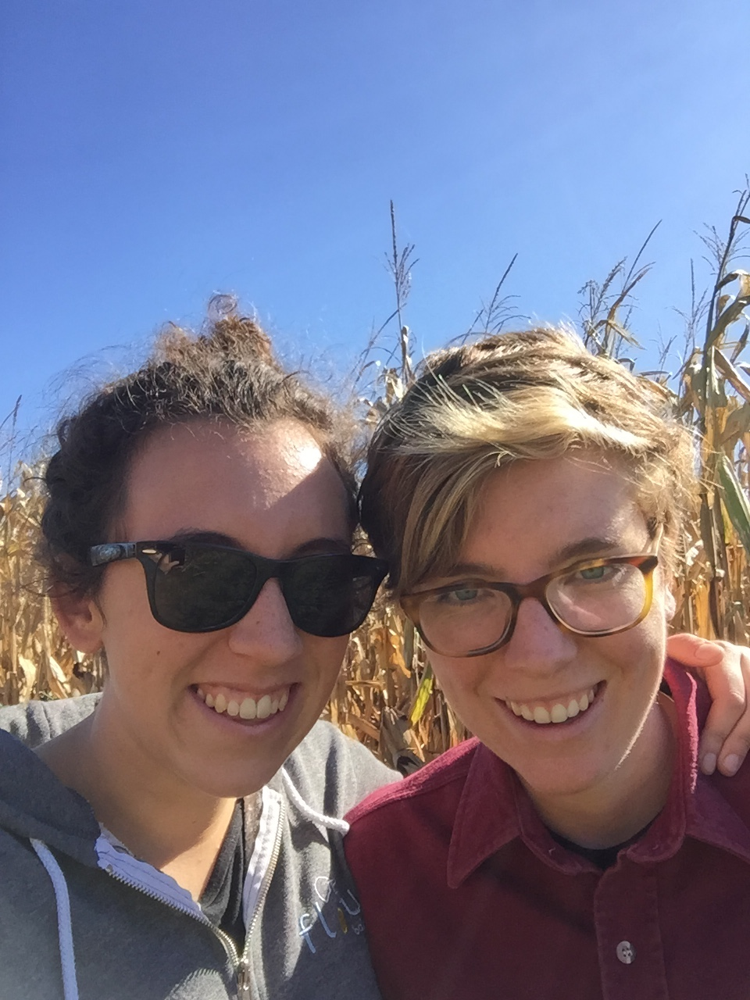

Ellen & Julia
are getting married
June 16th, 2018
are getting married
June 16th, 2018
65 North Main Street,
Yardley, PA
Ceremony will be inside and seated on pews.
Bowman's Hill Wildflower Preserve
1635 River Rd New Hope, PA
A casual late lunch/early dinner will be served.
The wedding, held during a worship meeting, begins in silent worship until Ellen and Julia rise to say their vows. Then Ellen and Julia sign a Quaker marriage certificate and sit down while it is read aloud. The group returns to silent worship from which all are welcome to share as they are moved in the moment, leaving a period of silence for reflection between messages.
Messages are usually quite diverse; they can be silly or serious - poems, stories of times we've shared together, or hopes and wishes for the future. Messages are typically unprepared and spoken from the heart as we are gathered together at the wedding. The meeting ends with a handshake and everyone signing the certificate as witnesses.
Children are very welcome at the ceremony. If an hour of Quaker meeting seems like a challenge, there are indoor and outdoor spaces to play.
Read more about Quaker meeting for worship here .
Your presence is the only present that we could wish for. We recognize that traveling to the wedding represents significant energy, time, and money for many of our family members and friends. For this, we are enormously grateful. Furthermore, we have lived together for several years, so we are lucky to already have a comfortable home and no remaining material needs. We value love and experiences above all things, so a hug when we see you, a message during the ceremony, or a letter of advice would be the most special presents.
In the event of extreme generosity, we're considering a honeymoon - possibly to Sardegna or the Tetons - and would appreciate contributions toward that adventure.